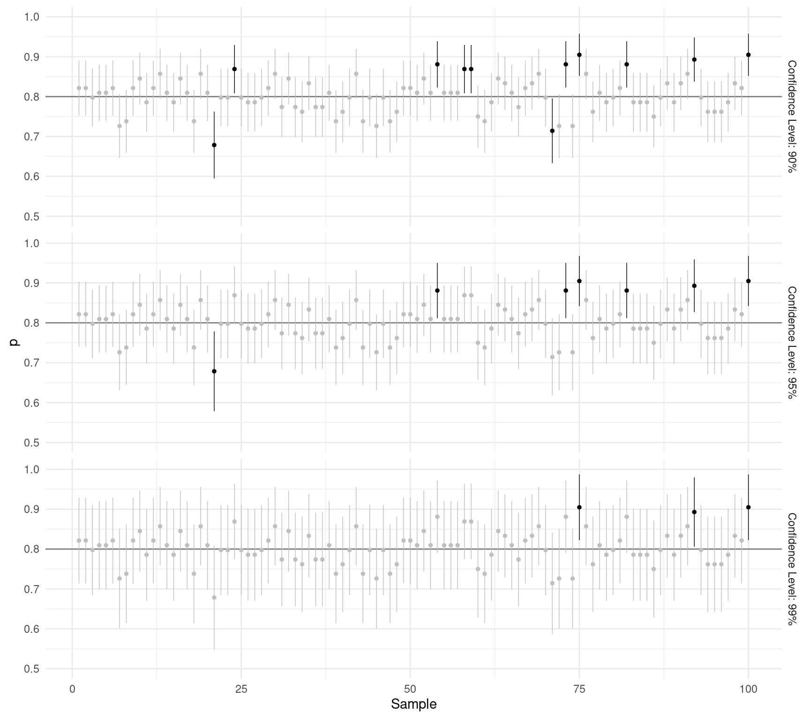
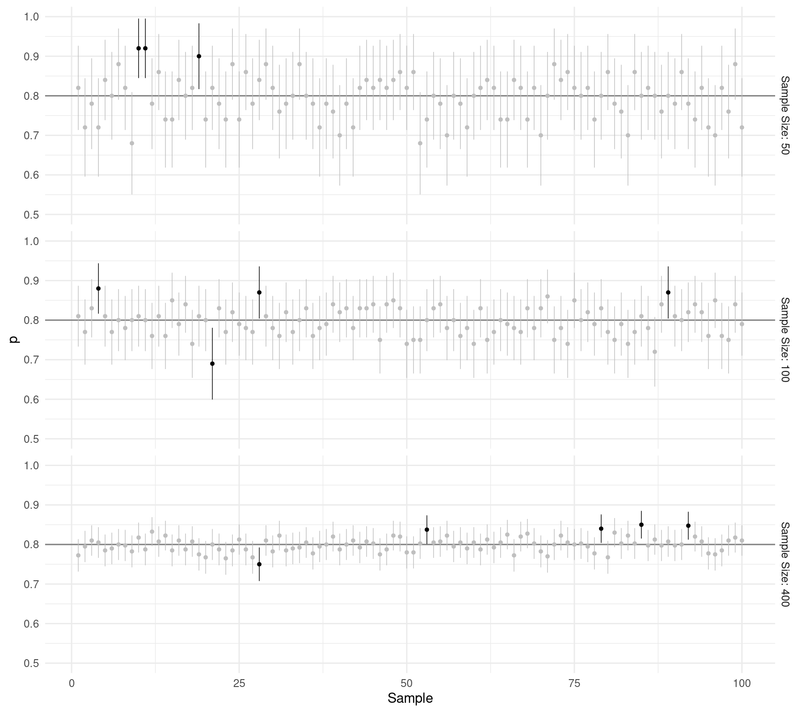
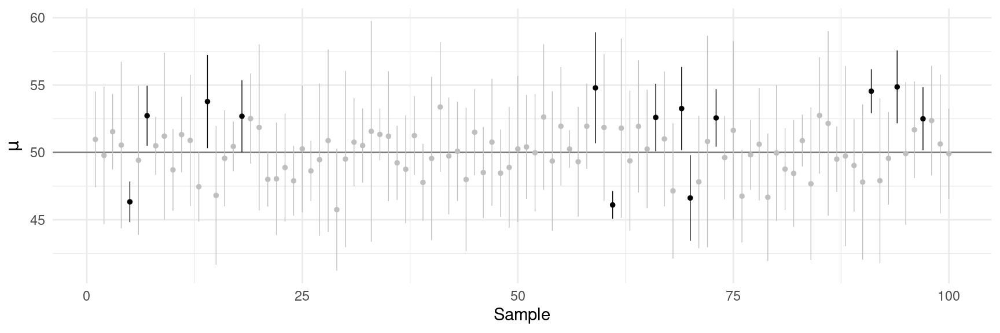
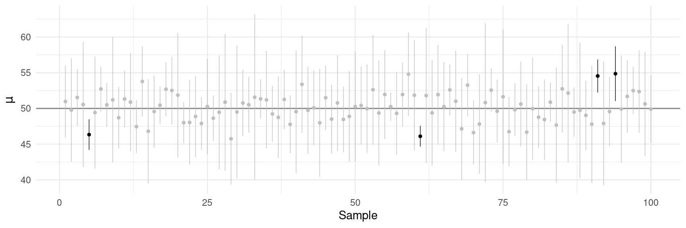
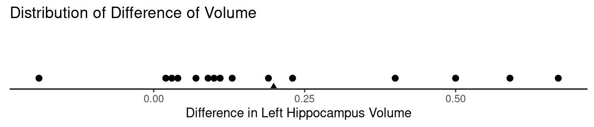
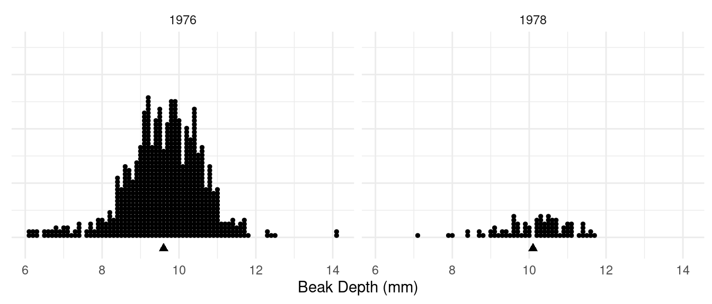

You can also download a PDF copy of this lecture.
Many confidence intervals (and all that will be discussed in this class) have the form \[ \large \overbrace{\text{point estimate} \pm \underbrace{\text{standard score} \times \text{standard error}}_{\text{margin of error}}}^{\text{confidence interval}}. \]
The confidence level of a confidence interval formula is the probability an interval produced by the formula will contain the parameter before the data are collected (after the data are collected the interval either does or does not contain the parameter). It is controlled through the standard score.
Example: Recall the study with the platies. Out of a sample of 84 observations, the yellow-tailed male was preferred on 67 observations. Let \(p\) be the probability of a preference for the yellow-tailed male. Let \(p\) be the probability that a female will prefer to the yellow-tailed male. What is our estimate of \(p\) using the confidence interval \[ \hat{p} \pm z\sqrt{\hat{p}(1-\hat{p})/n}, \] with a confidence level of 95%?
How about a confidence level of 90% or 99%? Note that we can look up \(z\) for any desired confidence level using statdistributions.com.| Level | \(z\) |
|---|---|
| 68% | 0.994 |
| 90% | 1.645 |
| 95% | 1.960 |
| 99% | 2.576 |
Suppose that \(p\) = 0.8. What would happen if we repeated the study many times over, each time computing a confidence interval \[ \hat{p} \pm z\sqrt{\hat{p}(1-\hat{p})/n}. \] to estimate \(p\)? Each panel below shows 100 confidence intervals. 

How does increasing the confidence level affect the margin of error and confidence interval?
How does increasing the sample size affect the margin of error and confidence interval?
Suppose I obtain 1000 samples, and from each sample I computed a confidence interval to estimate \(p\) using the formula \[ \hat{p} \pm 1.96\sqrt{\hat{p}(1-\hat{p})/n}. \] Approximately how many confidence intervals would contain \(p\)? What if we replaced 1.96 with 2.576?
The actual confidence level of the confidence interval \[ \bar{x} \pm zs/\sqrt{n} \] is less than the specified confidence level, particularly if \(n\) is small.

A solution is to modify the confidence interval as \[ \bar{x} \pm ts/\sqrt{n}, \] where \(t\) is a “t-score” from the \(t\)-distribution with degrees of freedom \(n-1\).

Example: Consider the following data from a study of the volume of the left hippocampus for twin pairs discordant for schizophrenia.1| Pair | Unaffected | Affected | Difference |
|---|---|---|---|
| 1 | 1.94 | 1.27 | 0.67 |
| 2 | 1.44 | 1.63 | -0.19 |
| 3 | 1.56 | 1.47 | 0.09 |
| 4 | 1.58 | 1.39 | 0.19 |
| 5 | 2.06 | 1.93 | 0.13 |
| \(\vdots\) | \(\vdots\) | \(\vdots\) | \(\vdots\) |
| 15 | 2.08 | 1.97 | 0.11 |

The mean difference from the sample is \(\bar{x}\) = 0.2 cubic cm, and the standard deviation from the sample is \(s\) = 0.24 cubic cm. Let \(\mu\) be the mean difference in volume for the probability distribution of one observation of the difference in mean volume. What are the point estimate, margin of error, and confidence interval (with a confidence level of 95%) for estimating \(\mu\)?
Example: Recall the study of beak length of finches on Daphne Major in 1976 and 1978.2  Let \(\mu_{76}\) and \(\mu_{78}\) be the means of the distributions of beak length in 1976 and 1978, respectively (i.e., the mean beak length of all finches on the island those years). What are the point estimates, margins of error, and confidence intervals for \(\mu_{76}\) and \(\mu_{78}\)?| Year | \(\bar{x}\) | \(s\) | \(n\) |
|---|---|---|---|
| 1976 | 9.6 | 1.0 | 751 |
| 1978 | 10.1 | 0.9 | 89 |
Important: From now on we will not necessarily being using 2 as our standard score in confidence intervals. For confidence intervals for \(p\), look up the value of \(z\) corresponding to the desired confidence level. For confidence intervals for \(\mu\), look up the value of \(t\) corresponding to the desired confidence level and degrees of freedom (\(n-1\)).
Suddath, R. L., Christison, G. W., Torrey, E. F., Casanova, M. F., & Weinberger, D. R. (1990). Anatomical abnormalities in the brains of monozygotic twins discordant for schizophrenia. New England Journal of Medicine, 322, 789–794.↩︎
Grant, P. (1986). Ecology and evolution of Darwin’s finches. Princeton, N.J.: Princeton University Press.↩︎